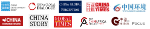
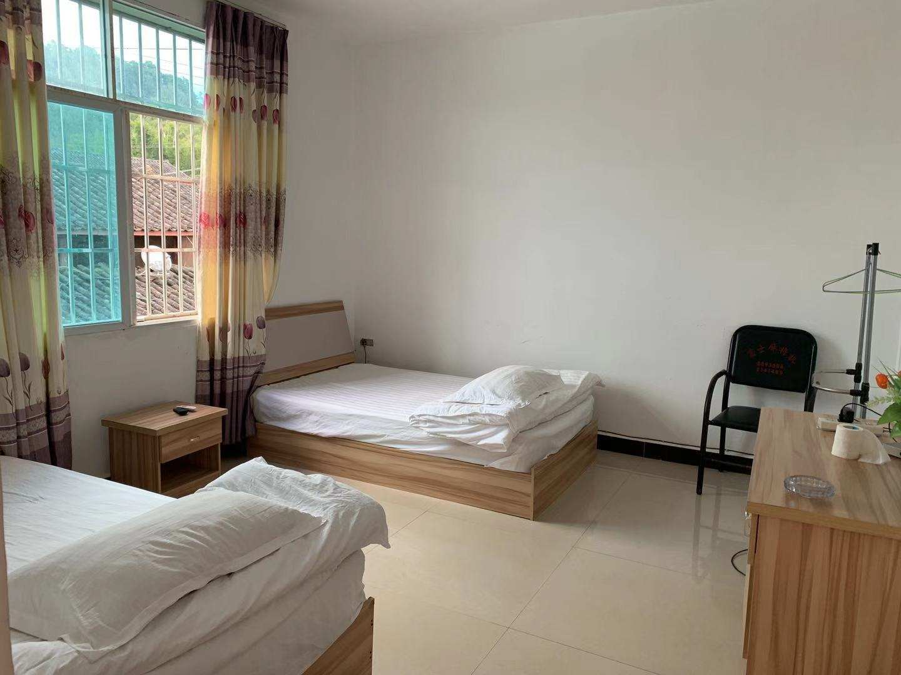
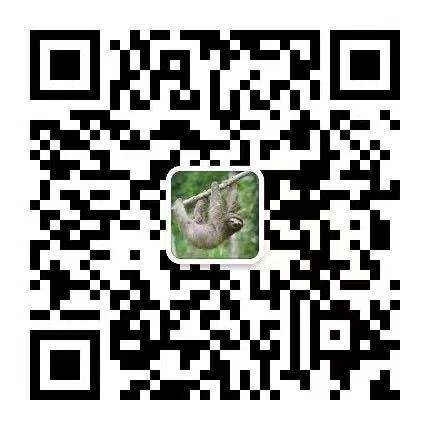

项目形式
1. 成果组：适合需要成果发表与背景提升的学员
项目提供深入且有针对性的前期线上辅导，实地调研期成果修改辅导，以及后期成果完善发表指导。学员根据自己感兴趣的课题，加入3-5人课题小组，完成调研成果并发表。
课程学习与线上调研期：实地调研前一个月（每周约5-8小时）
实地调研期：为期7天
公益行动期：实地调研后一个月
(1)理工科组
参考课题：如何用科学技术帮助野生动物保护工作？
相关专业：生态学、环境科学、计算机科学、工程学等
课题简介：该组的学员将线上调研科学技术在全球野生动物保护工作中的应用（用防兽灯缓解人兽冲突，用红外相机进行生物多样性监测、用无人机进行反盗猎等） ，并去到实地调研大树脚村的实际状况，用调研文章记录和探讨如何通过科技创新来减少云南的人象冲突。学员还有机会进行太阳能防兽灯、防象预警设备、APP 与小程序等方面的科技创新实践。
(2)人文社科组
参考课题：如何从人文社科角度帮助野生动物保护？
相关专业：社会学、人类学、公共政策、新闻学、传播学、艺术设计、心理学、教育学等
课题简介：该组的学员将线上调研全球公益组织如何用人文社科手段来保护野生动物（如何通过社区工作缓解人兽冲突，如何通过宣传教育提高公众对野生动物保护的意识，如何通过制定政策促进人与野生动物的和谐共处等），并在实地期间调研村民在经济发展、教育、性别平等、非遗传承等方面的现状与挑战，采集在大树脚村人与大象故事，用调研文章、纪录片、艺术设计作品、摄影集等方式呈现出来，并在后续公益行动期，开展公益传播，帮助更多的人关注大树脚村并给予力所能及的帮助。
(3)商科组
参考课题：如何用商业手段实现野生动物保护的目标？
相关专业：工商管理、市场营销、国际贸易等
课题简介：该组的学员将研究全球公益组织如何用商业手段来保护野生动物（通过旅游业、农业、文创产品销售等方式帮助野生动物保护组织获得经济收入等），并去到实地，调研人象冲突的现状和村庄经济，进而对大树脚村野生动物保护相关的文创产品开发、研学旅游和农产品销售情况进行市场调研，产出调研文章。学员还有机会进行商业营销实践，实际推动文创产品的创作，以及参与研学旅游产品和农产品的改进与销售，甚至打造独一无二的公益品牌，并在国内与国外尝试推广。
2. 体验组：适合对成果要求不高，以体验为主要目的的学员
所有体验组学员将组成一个小组，通过与成果组行程一致的实地调研，完成一份《云南人象冲突的现状与挑战》调研报告（不发表）。
课程学习期：根据学员时间与兴趣，自行安排录播课的学习
实地调研期：为期7天
公益行动期：实地调研后一个月（根据学员时间与兴趣，自行选择参加）
3. 个人定制成果：如需完成个人成果而非小组成果，可以与咨询老师沟通，定制你的个人调研项目。
你可以收获
·一份具有学术性和专业性的调研作品
过往作品曾发表在国内外顶尖平台，包括国家级期刊、美国高校学术研究平台、政策性媒体平台、顶级公益资讯平台等。
·一段具有真实社会影响力的公益经历
过往学员曾参与非洲野生动物保护工作，入围联合国地球卫士青年奖；曾搭建中非公平贸易平台，帮助非洲贫民窟女性，被《人民日报》报道；曾著书，并得到珍古道尔作序。
·一个共同搭建公益项目基地的机会
·一份长期可持续的公益项目指导方案
项目导师推荐信 | 国际认可的证书 | 全方位的技能提升 | 志同道合的友谊
参加项目，你需要满足什么要求?
成果组：在读高中生及大学生；无英语要求；前后期每周能投入5小时以上；需要面试
体验组：初中生到在职人士均可；无英语要求；主要实地调研期全程参与；需要面试
每期招生人数：8-20人，滚动录取，招满即止
实地调研时间：为期7天
项目安排
课程学习期-实地调研前一个月
·背景资料阅读
学员将阅读导师精心准备的中英文书籍文献、观看相关纪录片，建立对该课题的深度认识。
·专业课程学习
学员将自主安排时间、系统学习录播课程和公益项目指导手册，建立对公益的深度理解，掌握做调研和公益项目的基础知识与技能，具体包括：
(1) 公益导论课：如何规避常见误区，理解国际视野中的公益？
(2) 调研方法课：如何专业地完成选题、案头调研、采访、问卷调查等工作？
(3) 话题理解课：如何理解国际野生动物保护？
(4) 公益传播课：如何用写作、演讲、视频等方式把公益故事讲好？
(5) 旅行安全课：如何在旅行中保护自己？
(6) 生涯规划课：如何进行生涯规划，追寻有收入、有意思、有意义的人生？
(7) Networking课：如何Networking、建立人脉，为自己和项目获得帮助？
(8) 项目管理课：青少年如何做好项目管理？
(9) 项目评估课：如何评估公益项目的效果？
·三次直播授课（仅提供给成果组）
导师将带领成果组学员开展线上调研，并通过线上工作坊形式（每次为1.5小时），指导学员确认课题、听取学员调研进展并针对性指导、撰写访谈提纲、辅导学员完成线上调研成果，为实地调研做好充分准备。
实地调研期-为期一周，以下为参考行程:
Day 1：学员到达普洱，前往大树脚村并入住；导师进行一对一深度沟通；破冰活动暨模拟采访工作坊；小组项目会议。
Day 2：调研当地人象冲突的基本信息：上午，采访村干部，了解大树脚村人象冲突的始末和影响；下午，大量采访大树脚村村民，了解村民对野象的态度。
Day 3：调研野象活动情况与当前应对机制：上午，远距离观测野象，了解目前防范人象冲突的监测机制；下午，采访附近的曼老街村村民，了解村民对野象的态度，以及村民采取缓解人象冲突的措施，与大树脚村进行比较。
Day 4：调研野象造成的具体损害及背后原因：上午，跟随保险定损员访问受野象影响的人家，深度访谈村民受到的影响及原因；下午，向保险定损员学习保险补偿机制，及其成绩与挑战。
Day 5：总结调研发现，策划公益行动：上午，与村民代表举办研讨会，通过小组 presentation 总结调研发现，探讨青年学生对于当地人象冲突所能带来的贡献；下午，进行调研成果的总结整理，完成调研文章、视频等作品的初稿，进行公益行动方案的设计。
Day 6：根据本组课题进行公益实践：进行科技创新的实践，包括防象灯的安装与改良探究；参与“与象分享”公益农产品的实践，进行公益营销；公益传播方案的宣传与实施；完成调研文章、视频等作品的二稿。
Day 7：学员进行成果展示，导师为学员颁发证书，指导学员后续开展公益实践；返程。
公益行动期-实地调研后一个月
·公益行动设计与执行
基于扎实的实地调研结果和专业的技能指导，学员将开展公益设计、公益传播、公益筹款等后续公益行动，创造真实并且可持续的公益影响力。
·调研作品发表（仅提供给成果组）
优秀作品将有机会推荐投稿，发表至国内外具有影响力的学术、公益、媒体平台。
·推荐信申请
项目导师将为优秀学员提供推荐信，特别优秀的学员有机会获得项目创始人的推荐信。
·个人回顾分享
我们鼓励学员把调研与公益经历写成个人回顾文章，优秀文章将有机会发表在相关新媒体平台上。
·长期公益行动规划
我们也鼓励学员以本次项目为起点，规划未来一到两年的活动，续写个人公益故事。每位学员都会得到老师量身定制的个人活动规划建议。
往期学员反馈
朱同学 上海民办位育
感觉这次切实地体验了一把调研的感觉，比之前想象中的要更复杂但也更有趣。收获最大的是发现写文章并没有自己想象中的那么难，只要开始写然后坚持写下去也能写出一篇还不错的文章。此外这次项目还认识了特别棒的老师和很多超级有趣的同学，也是特别大的收获。
仝同学 上海民办平和学校
参加完这次项目之后感觉度过了非常充实的一个星期，在这一周内非常高效地完成了一切并得到了能力的提升所以感觉特别有成就感！和同学交流也让我学到了很多，并且学习到了很多关于大象的知识可以让我运用到其他地方。同时这次活动项目丰富了我的活动，让我感觉对申请大学更有信心了！
交通与食宿安排
交通
为学员提供往返项目地点的购票建议（机票、高铁票等）、购票服务、以及接送机/站服务，为学员安排合理的行程。
饮食
为学员提供安全、卫生、营养均衡的饮食，主要为当地特色的家常菜。

住宿
为学员提供干净整洁的当地特色住宿，位于安全区域内，不会有大象进入。
安全保障
安全须知和行为规范
向学员提供详细的《安全须知和行为规范指导》，内容包括项目中的安全注意事项、行为规范、紧急联络方式等，确保学员的人身安全。
安全培训会
将在实地项目启动时开展安全培训会，强调项目中的注意事项，加强学员自身的安全意识。
项目地提前考察
导师对于每一个项目基地都进行了多次详细的考察，确保项目地的安全和项目质量。
导师全程陪同和联系
导师将全程参与项目的行前准备和实地调研。实地期间，导师将每天与学员家长联系，实时同步实地调研的行程、照片和其他文字消息。
保险和疾病预防
导师将为每名学员购买保险，并为每个项目准备常见药品、医疗包。实地调研中，有突发状况的学员，导师将在第一时间陪同就医。
常见问题
项目都是哪些学生参与？
参与我们调研项目的主要是高中生和大学生，根据不同项目主题，比例略有不同。在面试过程中，老师会了解学员的基本情况，为学员匹配最合适的项目。往期项目有来自于中国常熟世界联合学院、北京四中、杭外、成都七中、深圳万科梅沙书院等学校的高中生，以及来自于复旦大学、南京大学、埃默里大学、康奈尔大学等知名高校的大学生。学员将在项目中与很多优秀的同学一起交流成长。
课题小组的行程是一样的吗？如果是完全不同的行程，那老师怎么带得过来呢？
学员调研的社会议题往往会涉及到跨学科知识，不同的小组只是从不同细分课题角度切入。为了保障学员安全以及促进不同小组的交流合作，团体项目中大家的行程总体是一样的。我们会匹配足够的老师和助教，帮助不同小组开展自己的针对性调研工作。
实地调研时间这么短，会不会学不到什么东西？
实地调研期的学习与工作强度非常大——在导师的精心安排下，学员从早到晚都会有非常充实的行程。此外，实地调研行程仅仅是项目的一部分而已，整个项目周期是2个月左右。在出发前的一个月，导师会着重教授同学们调研方法并带领学员开展线上调研。 实地项目结束后的一个月，导师会指导学员打磨最终的调研成果产出，也会指导学员结合自己的特长专业设计并执行公益项目。
参加项目对申请学校有帮助吗？
学员在项目当中可以学习专业的公益知识，掌握调研技能，完成高质量项目成果，收获项目证书，斩获推荐信。许多学员后续还做了1-2年的公益活动。这些经历帮助他们申请到了普林斯顿大学、哥伦比亚大学、宾夕法尼亚大学、剑桥大学等名校。
学生晚上有课，能参与项目吗？
实地调研前的线上课程，导师会统计每名学员的时间，并且协调安排，尽量让所有学员都能够参与线上课程。如果学员临时有事情无法参与课程，导师也会将课程录屏后单独发给学员，帮助学员跟上学习进度。
如果受疫情影响无法出行，你们能够退费吗？
保障学员的安全和健康是我们的首要目标。一方面，我们在密切关注全国各地的疫情动态，以及与项目地公益组织保持联系，确保第一时间了解项目地疫情动态并采取行动；另一方面，我们也为学员准备好了口罩、体温枪、免洗洗手液等防疫物资和基础药品，确保在实地期间保障学员健康。如果在出发前出现疫情，我们会第一时间与家长沟通，并视情况提供备选方案、退费或延期。
咨询联系：详情请添加工作人员小懒微信咨询
